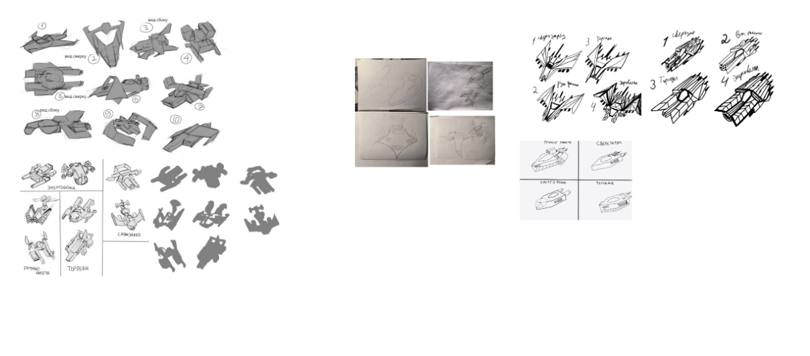
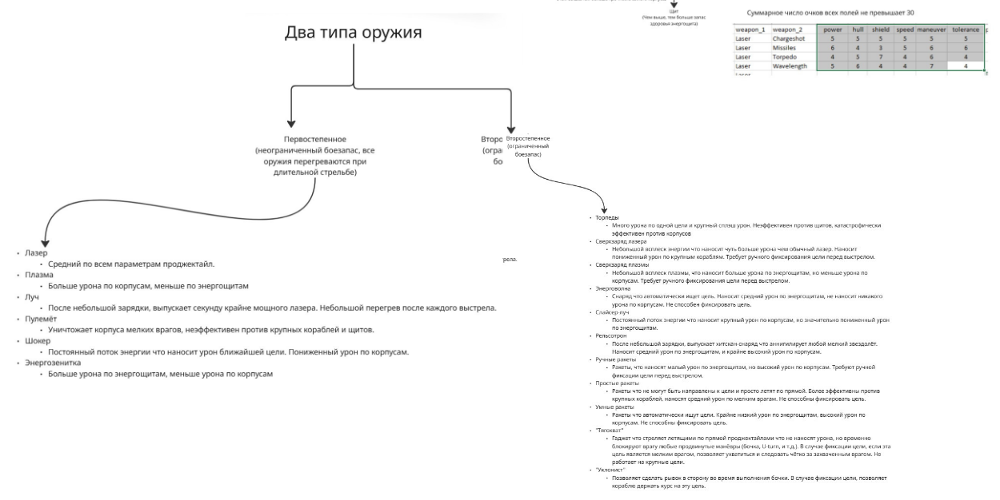
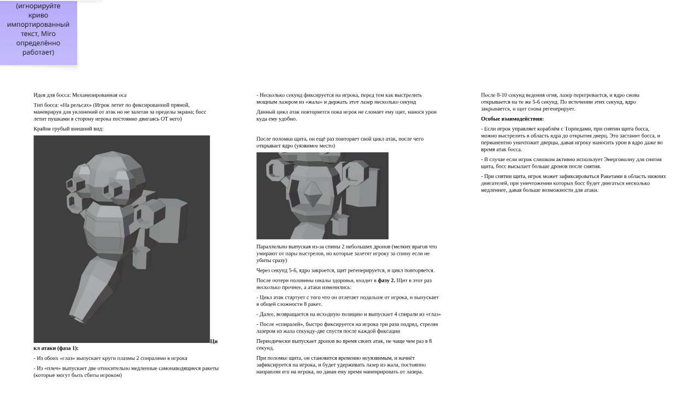
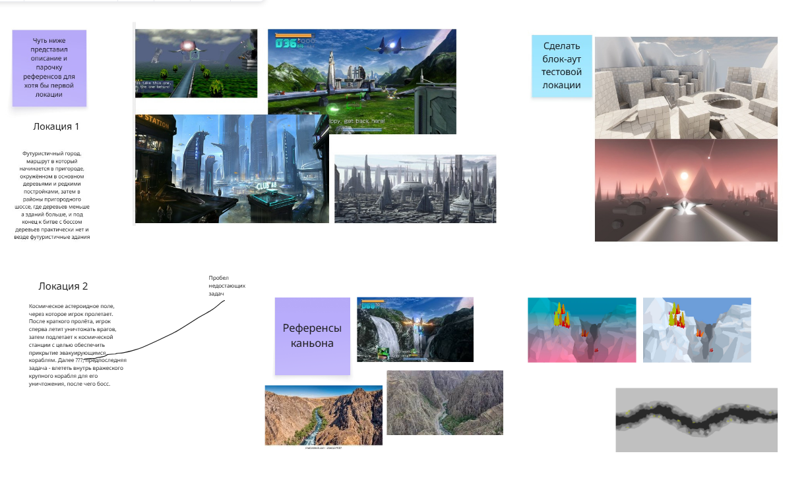

О проекте
Описание проекта SpaceWolf
Проект SpaceWolf — это современное переосмысление жанра on-rails shooter. Мы фокусируемся на создании сложных паттернов поведения врагов и интерактивного окружения.

Разработка противников

В проекте представлено несколько типов уникальных противников, каждый из которых требует своей тактики:
- Корабль «Скат»: Выпускает широкую энергетическую волну. Уязвим в области боковых орудий во время подготовки залпа.
- Тентакль: Бронированный враг, реагирующий только на заряженные выстрелы (Charge Shot).
- Рой (мошки): Группа мелких врагов, мешающих обзору. Сбрасываются выполнением «бочки» (Barrel Roll).
- Тандемные двойники: Два истребителя, связанных лучом. При уничтожении одного второй впадает в ярость.
- Бутон-снайпер: Бронированный шар, раскрывающийся только для выстрела.

Разработка уровней

Мы спроектировали несколько уровней с уникальными игровыми ситуациями:
Уровень 2: Космическая станция
- Фаза 1 (On-rails): Полет через кладбище кораблей.
- Фаза 2 (All-range): Защита эвакуационных транспортов от бомбардировщиков.
- Фаза 3 (On-rails): Штурм вражеского флагмана.
Уровень 3: Древний узел связи
- Визуал: Стиль «Бегущего по лезвию 2049».
- Завязка: Активация башен пробуждает гигантского Механического Червя.
- Финал: Забег по узким желобам (Trench Runs) внутри Цитадели.